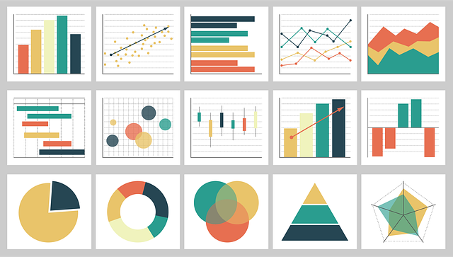
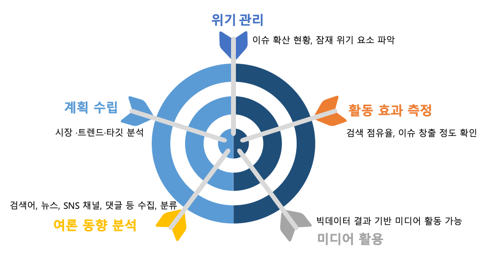

안녕하세요! 데이터 분석과 시각화에 관심이 있으신가요? 그렇다면 '오렌지3'에 대해 들어본 적이 있을 것입니다. 오렌지3는 데이터 분석 및 시각화에 특화된 오픈 소스 툴로, 프로그래밍 경험이 거의 없는 사람들도 직관적인 인터페이스를 통해 복잡한 데이터 분석 작업을 수행할 수 있게 도와줍니다. 오렌지3는 데이터 분석의 세계를 더욱 간편하고 접근하기 쉽게 만들어주는 훌륭한 도구입니다. 데이터에 관심이 있거나, 복잡한 코딩 없이 데이터 분석을 시도해보고 싶은 분들에게 추천드립니다!

오렌지3는 데이터 마이닝 및 시각화를 위한 오픈 소스 툴킷입니다. 그래픽 사용자 인터페이스를 통해 사용자는 드래그 앤 드롭 방식으로 데이터 분석 워크플로우를 구성할 수 있습니다.
오렌지3는 학계, 연구 기관, 기업 등 다양한 분야에서 활용되고 있습니다. 특히 데이터 분석에 입문하는 사람들이나 프로그래밍 경험이 적은 사람들에게 인기가 있습니다.
데이터는 현대 사회에서 중요한 자산으로 자리 잡았습니다. 그러나 데이터 자체는 큰 의미를 갖지 않습니다. 그 데이터로부터 의미 있는 정보와 지식을 추출하는 것이 중요하고, 그 과정에서 오렌지3와 같은 도구는 중요한 역할을 합니다. 오렌지3는 복잡한 프로그래밍 없이도 데이터를 직관적으로 분석하고 시각화할 수 있게 도와주므로, 데이터 분석의 접근성을 높여줍니다.
데이터를 다양한 그래프와 차트로 시각화하여 데이터의 패턴이나 특징을 쉽게 파악할 수 있습니다.
결측치 처리, 정규화, 스케일링 등 데이터를 분석하기 좋은 형태로 가공하는 도구가 제공됩니다.

통계 분석, 군집 분석, 분류, 회귀 등 다양한 기계 학습 알고리즘을 적용하여 데이터를 분석할 수 있습니다.

TensorFlow, PyTorch, scikit-learn과 같은 라이브러리를 사용하여 다양한 머신러닝 모델을 구축하고 학습시킬 수 있습니다.
워드 클라우드, 감정분석, 동시출현네트워크, 토픽모델링과 같은 분석 방법을 톻해 텍스트 데이터를 분석할 수 있습니다.
